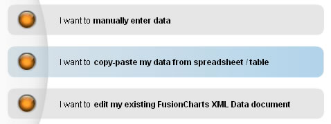
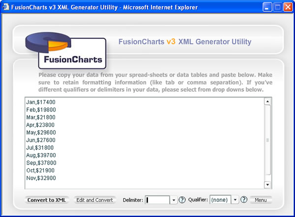
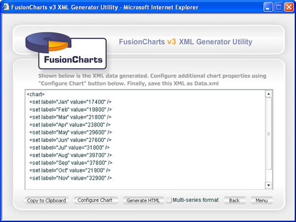
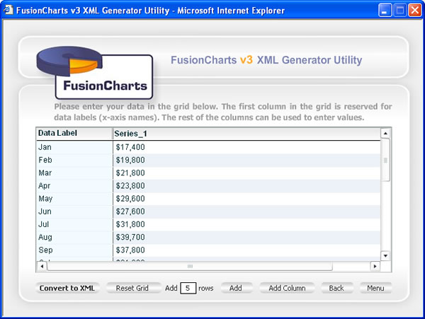

Plotting Charts from Delimiter-separated Data |
Using the Visual XML Generator tool, you can also plot charts from your data stored as delimiter separated data e.g., CSV (Comma Separated Values) or Tab separated Values. Delimited data uses specific characters (delimiters) to separate its values. Any character may be used to separate the values, but the most common characters used are the comma, tab and space. For example, in a comma-separated values (CSV) file the data items are delimited using commas. Delimited data is divided into columns and rows. Each line is a row of data. The lines are separated by carriage return character. For example, the following data is delimited by comma character and newline characters: |
| Jan,$17400 Feb,$19800 Mar,$21800 Apr,$23800 May,$29600 Jun,$27600 Jul,$31800 Aug,$39700 Sep,$37800 Oct,$21900 Nov,$32900 Dec,$39800 |
In the above data, there are two columns of data - month and sales figure. Each row represents a month and is separated by carriage return character. The delimiter here is comma, as that separates two data items on the same row. A delimiter is a sequence of one or more characters used to specify the boundary between data columns in a given row. More examples of delimited data: |
| Jan;$17400 Feb;$19800 Mar;$21800 Apr;$23800 May;$29600 Jun;$27600 Jul;$31800 Aug;$39700 Sep;$37800 Oct;$21900 Nov;$32900 Dec;$39800 |
| Example of semi-colon separated data |
| Jan $17400 Feb $19800 Mar $21800 Apr $23800 May $29600 Jun $27600 Jul $31800 Aug $39700 Sep $37800 Oct $21900 Nov $32900 Dec $39800 |
| Example of space separated data |
You can also have multiple columns of data in the same row. For example, in the data below, we've 7 columns of data in each row separated by comma. |
| 10/28/2006,23.300,23.540,22.900,23.080,16,383,998 10/27/2006,23.300,23.540,22.900,23.110,17,027,760 10/26/2006,23.100,23.500,22.890,23.370,14,095,750 10/25/2006,23.265,23.310,22.800,23.070,19,890,630 10/24/2006,23.420,23.560,23.180,23.280,15,415,720 10/23/2006,23.430,23.930,23.370,23.600,12,736,720 10/20/2006,23.360,23.650,22.970,23.540,20,828,490 10/19/2006,23.700,23.701,23.050,23.120,39,415,240 10/18/2006,24.680,24.950,24.180,24.700,18,208,730 10/17/2006,24.330,24.720,24.220,24.540,21,782,780 10/16/2006,24.090,24.730,24.000,24.620,20,307,960 10/13/2006,23.880,24.331,23.710,23.950,16,910,650 |
| Qualifiers |
If your data contains the delimiter as a part of data, you'll need to use qualifiers to escape that character sequence. For example, if your data is : Doe, Mary $550 45 and you want to separate it using commas, you'll have to use double quotes as qualifier as under in FusionCharts XML GUI: "Doe,Mary","$550","45" Note that all the data fields would have to use the qualifier now - and not just the field that contains the delimiter. Let's now see how to build charts from delimiter separated data. Before that, we reiterate that in FusionCharts XML GUI, you'll have to:
|
| Converting delimiter separated data into chart |
| We'll now convert the following comma separated data into a chart. |
| Jan,$17400 Feb,$19800 Mar,$21800 Apr,$23800 May,$29600 Jun,$27600 Jul,$31800 Aug,$39700 Sep,$37800 Oct,$21900 Nov,$32900 Dec,$39800 |
| To do so, launch the XML Generator and select the second option "I want to copy-paste my data from spreadsheet / table..." |
|  |
| In the text area that you now get, paste the CSV data. Also, select Comma as the delimiter and leave qualifier as none, as we do not have a qualifier in this data. |
|  |
Now, you've two options to convert it into XML:
To choose option 1, click on "Convert to XML" button. You'll instantly get the XML as under: |
|  |
You can now configure the chart properties or generate HTML from here as explained in earlier sections. Going back to previous step, if you had wished to edit the data before conversion, you can click on "Edit and Convert" button. This lets you edit your data in a grid as under: |
|  |
| After editing your data, you can now click on "Convert to XML" button to generate the XML and finally chart. |